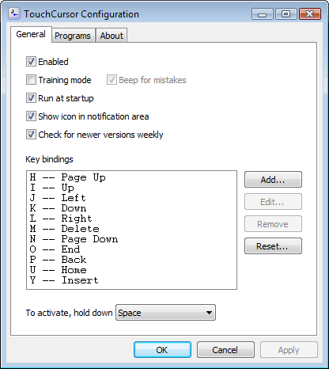

Getting Started
Press and hold the space bar (as if it were a Shift key) to activate "cursor mode" and use the home keys as cursor keys. To return to normal typing just release the space bar.
The default layout is shown below, but you can change this on the General Tab of the configuration dialog.

In the default TouchCursor layout, all the navigation keys are conveniently under the right hand, leaving your left hand free to use Ctrl, Alt and Shift, as normal.
Practising
To begin with, just run your favorite editor or word processor and try moving the cursor around to get a feel for how it works.
You can use the training mode option to help force you into the TouchCursor habit during your day-to-day work. You will probably want to restrict it to certain programs.
Fine tuning
A side effect of using TouchCursor is that the space bar doesn't produce a space until you release it. If this causes problems in some programs, you can list them on the Programs Tab and TouchCursor will be disabled when you are working with them.
Another side effect is that the space bar doesn't auto-repeat. If you miss this, you can easily add a key binding, for example "S", that will emit spaces with autorepeat.
Alternatively, you can choose a different activation key.
Virtual Machines
Normally TouchCursor will work transparently with virtual machines and remote desktop software – You don't need to install it on the guest OS or the remote machine – However, some versions of VMware have an "enhanced virtual keyboard" feature, which bypasses TouchCursor on the host OS. You can disable this feature to allow TouchCursor to work.
Configuration Options
You can access the configuration dialog from the icon in the notification area, the start menu or, when TouchCursor is active, by holding down space and pressing F5.
General Tab
Contains general options and key bindings

Enabled
Enables and disables TouchCursor. You can also configure this per-program on the Programs Tab.
Training mode
This disables the real cursor keys and any others that are bound. This can be a little annoying but it does get you accustomed to TouchCursor very quickly. You will probably want to restrict which programs this happens in using the Programs Tab.
Beep for mistakes
When using training mode, this option will cause TouchCursor to beep when it ignores a key.
Run at startup
Runs TouchCursor when you log on to Windows.
If you are running TouchCursor from a USB drive this will have no effect unless the USB drive is connected when you log on.
Show icon in notification area
Shows or hides the icon in the notification area (AKA "system tray").
If you hide the icon, you can access the configuration dialog from the start menu instead (or by pressing Space+F5, if TouchCursor is active).
Check for newer versions weekly
Tells TouchCursor to check the web once a week to see if there is a newer version available for download.
Key bindings
This lets you view and customize the key bindings.
You can add, edit or remove entries in the list using the buttons. Double-clicking an entry will also edit it. The Reset button resets the bindings to the default values.
Activation Key
If you don't want to use Space to activate TouchCursor you can choose a different key from this list. Note that due to the different ways in which various models of keyboard are wired, some combinations of activation key and key bindings may not work.
Programs Tab
This lets you restrict which programs TouchCursor works with.
Click the "..." button to edit a list interactively: Add a program by dragging the crosshair icon on to the window of the program you want to add.
You can also edit the list directly. When adding programs this way, type the executable file names, separated by semicolons.

Cursor Mode
You can choose to enable TouchCursor in all programs except those that you specify, or in only the programs that you specify.
Training Mode
You can choose to use Training Mode in all programs except those that you specify, or in only the programs that you specify. These settings combine with the Training Mode checkbox on the General Tab: If Training Mode is disabled, these settings have no effect.
License
TouchCursor is free software: you can redistribute it and/or modify it under the terms of the GNU General Public License as published by the Free Software Foundation, either version 3 of the License, or (at your option) any later version.
This program is distributed in the hope that it will be useful, but WITHOUT ANY WARRANTY; without even the implied warranty of MERCHANTABILITY or FITNESS FOR A PARTICULAR PURPOSE. See the GNU General Public License for more details.